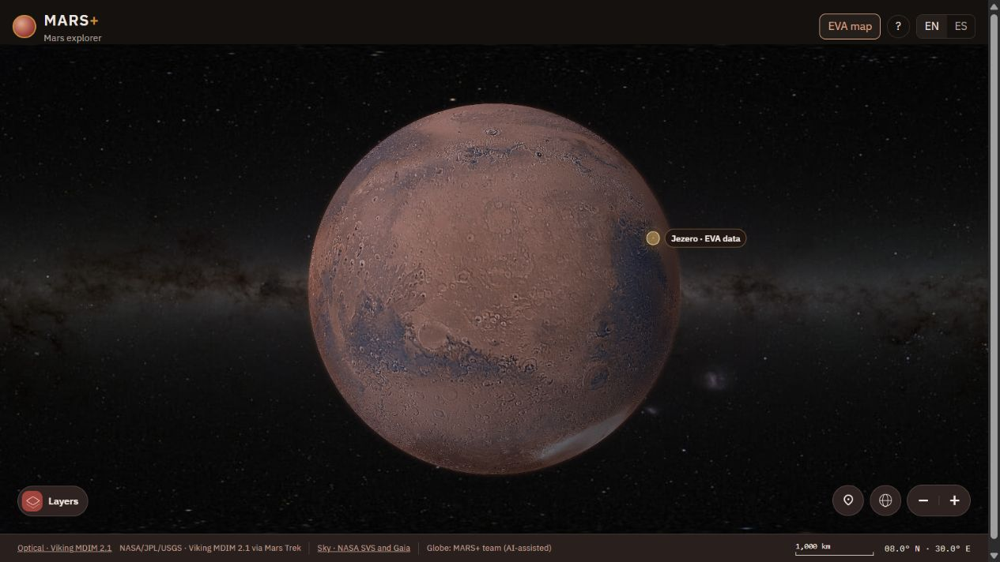
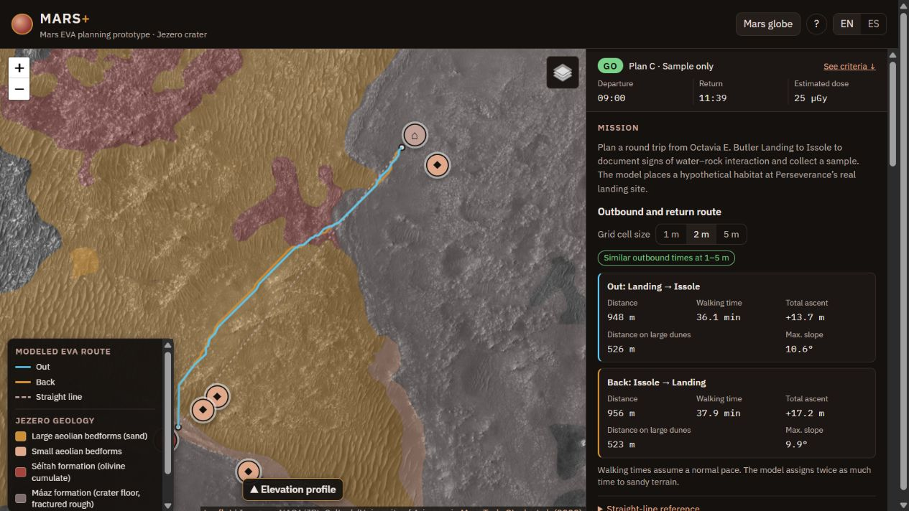
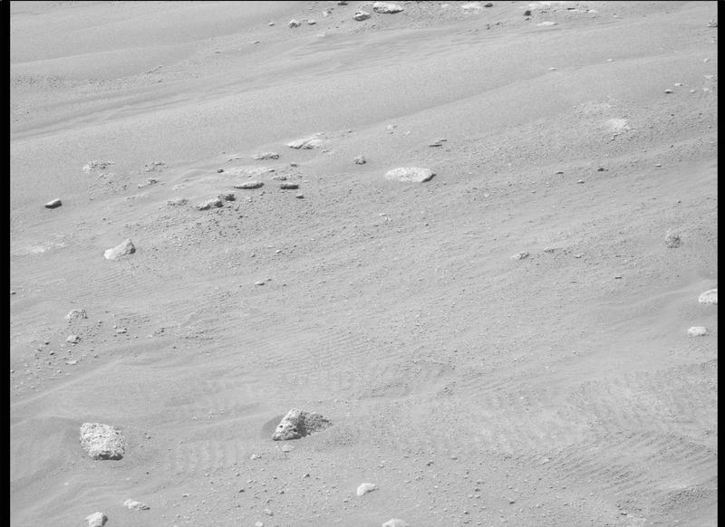
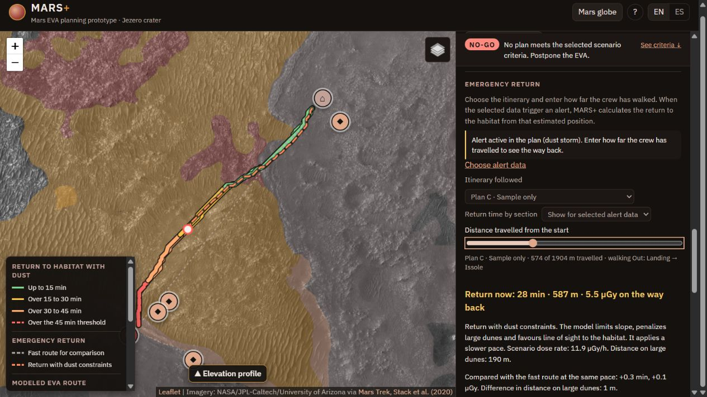

NASA Space Apps Challenge 2026 · Team Stargate+
MARS+
Plan an astronaut traverse in Jezero crater
From Perseverance’s landing site to Issole, where the rover sampled rock altered by water.
02 / 07 · Challenge and problem
The crew needs to know when to turn back
A traverse competes for walking time, science time and return time. The crew needs to decide where to stop and whether it can get back from each part of the route.
The challenge asks for a layered map that integrates measurements from NASA missions at the scale of a human expedition. The Jezero pilot combines terrain, science targets and historical conditions around one walk.
03 / 07 · Proposed solution
Choose a plan that fits the EVA
Under the 180-minute scenario, sampling alone fits at 09:00 local solar time. Adding the photography stop exceeds the allowed time by about five minutes.
- 09:00
- Depart
- 11:39
- Return
- 159 min
- Budgeted EVA
The modeled habitat is placed at the real Octavia E. Butler Landing site.

04 / 07 · From data to a decision
Different scales answer different questions
- Where can the crew walk?
- HiRISE imagery and elevation, plus mapped dunes, feed directional walking costs on a 2 m grid. A* finds the least-cost path.
- What is worth examining?
- CRISM identifies broad spectral patterns. Published rover observations and sample records support the choice of individual stops.
- When can the plan go ahead?
- Terrain, workspace, time budget, historical weather and radiation each have their own check. A failed check excludes that plan.
05 / 07 · At the outcrop
Find a reason to stop
At Issole, the annotated Quartier target and instrument measurements connect the route to a real science task. NASA’s catalog records the Robine and Malay cores from the outcrop.
CRISM shows orbital mineral signatures at 18 m per pixel. A pixel can contain several materials. The stop cards cite the separate surface evidence.

06 / 07 · During the traverse
Recompute the way back
Replay the Mastcam-Z opacity observation from sol 1255. At 574 m along Plan C, the model estimates a 28-minute return under its dust constraints.
Compare the same position under normal and dust conditions. A separate solar-particle replay uses historical Curiosity RAD data from Gale crater.
The model applies an assumed slower pace in dust and a tighter slope limit. The alert threshold is a scenario rule.

07 / 07 · Evidence and scope
What the prototype can show
- Reproducible checks
- Browser and pipeline route times agree within 1% for the tested legs. Eight of 1,059 cells sampled along the historic rover drive were flagged as blocked. That check covers only terrain along the rover trace.
- Scope of the estimates
- Walking pace, habitat, reserves and alert thresholds are scenario assumptions. The weather and radiation replays use measurements from specific places and dates. The prototype has no human EVA field validation.
- Next step
- Test walking times and terrain restrictions in suited field trials. Use those observations to refine the model before considering operational use.
AI assistance: Claude, Cursor and OpenAI Codex supported research, code, testing, writing and this presentation. The globe screenshot shows an AI-assisted renderer using NASA imagery. The separate AI-generated MARS+ logo is labeled in the project.